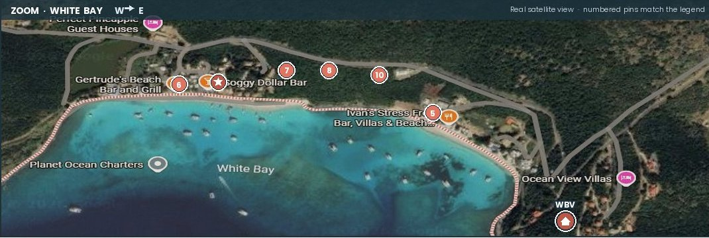

All thirteen points of interest. Numbers below each venue card match the pins on the map.

White Bay close-up · west → east, Gertrude\'s and Soggy Dollar to Ivan\'s and Ocean View.
A Guest Guide · Jost Van Dyke, BVI
Forty years on the island, and we still find new favorites. Here's our shortlist — every bar, every kitchen, every painkiller worth ordering. Most of these don't show up on Google.
Jost runs on its own clock. Walk in, say hi, and you're already a regular. We made this map because guests kept asking for "the list" — and because the best spots on the island never show up on a Google search.
The map below shows every venue numbered 1–13. Find a place that catches your eye, scroll to its card, and tap to call ahead.
— Four neighborhoods, one island
Jost is small — four miles long, one mile wide. The action clusters in four places, all easy to reach by taxi from White Bay Villas.
All thirteen points of interest. Numbers below each venue card match the pins on the map.

White Bay close-up · west → east, Gertrude\'s and Soggy Dollar to Ivan\'s and Ocean View.

— Things only the locals know
Forty years of guests, and these are the ones we tell everyone.
Most beach bars take cards now, but a few still don't. Carry small US bills (BVI uses USD) for tips, taxis, and the occasional honor-system bar.
Posted hours are suggestions. If a place looks closed at lunch, try the next one — or come back at 4. Nobody's stressed about it, and neither should you be.
The Painkiller cocktail was invented at Soggy Dollar Bar. Have one there first. Then judge every other one against it for the rest of your life.
The legendary buffet. Show up hungry, expect a line, plan to stay late. Live music most nights too.
The locals' favorite weekend tradition in Little Harbour. Reservations recommended for groups.
It's on Little Jost Van Dyke — you'll need a dinghy, or you can wade across at low tide. Worth it for the corn hole and "fish 'n foil."
Most places take walk-ins, but for dinner at Foxy's, Foxy's Taboo, Abe's, or Sidney's, a quick call ahead almost always pays off — especially in season.
The Bubbly Pool is a 15-minute hike from Diamond Cay. Lunch at Foxy's Taboo first, hike after. Or hike first if you want to earn lunch.
Tell us what kind of night you want — quiet candlelit dinner, beach-bar crawl, family-friendly Sunday lunch — and we'll point you exactly where to go.
Hours, phone numbers, and ownership change. We update this guide regularly, but always call ahead in low season or for groups of 6+. Some venues are seasonal. If you find something out-of-date, let us know — we'll fix it.